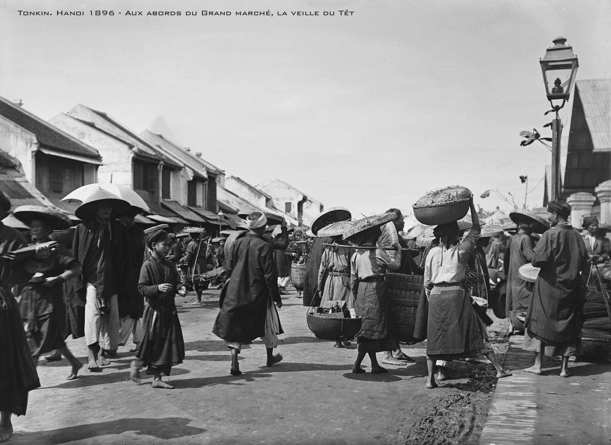

Khởi Sắc: Hai Dòng Họ Mở Phường Tranh
Vào năm Chính Hòa thứ 22 (1701), dân làng Kim Bảng và Hoàng Bảng từ Thanh Hóa di cư ra Bắc, nhập thành làng Kim Hoàng ở phía tây thành Thăng Long xưa (nay thuộc xã Sơn Đồng, Hà Nội). Nhận thấy tranh Đông Hồ chỉ đủ cho mạn Hà Bắc, Hải Dương, còn tranh Hàng Trống lại quá đắt đỏ so với túi tiền người nông dân, hai dòng họ Nguyễn Sỹ và Nguyễn Thế đã quyết tâm sáng tạo một dòng tranh mới kết hợp kỹ thuật tinh hoa của cả hai nơi, lập nên một “phường tranh” thu hút cả làng vào nghề.

Hàng năm vào rằm tháng Giêng, làng bắt đầu vào vụ in tranh. Đến rằm tháng Chạp, người dân quẩy tranh đi khắp các phiên chợ vùng ven như chợ Sấu Giá, Sơn Đồng, Chùa Thầy, Chợ Canh... Những năm phát đạt, gánh tranh bán về nặng trĩu tiền đồng Tự Đức.